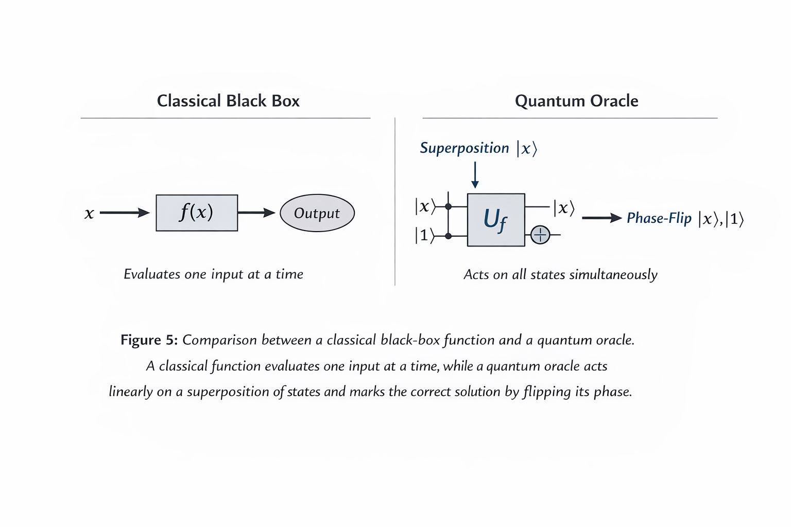
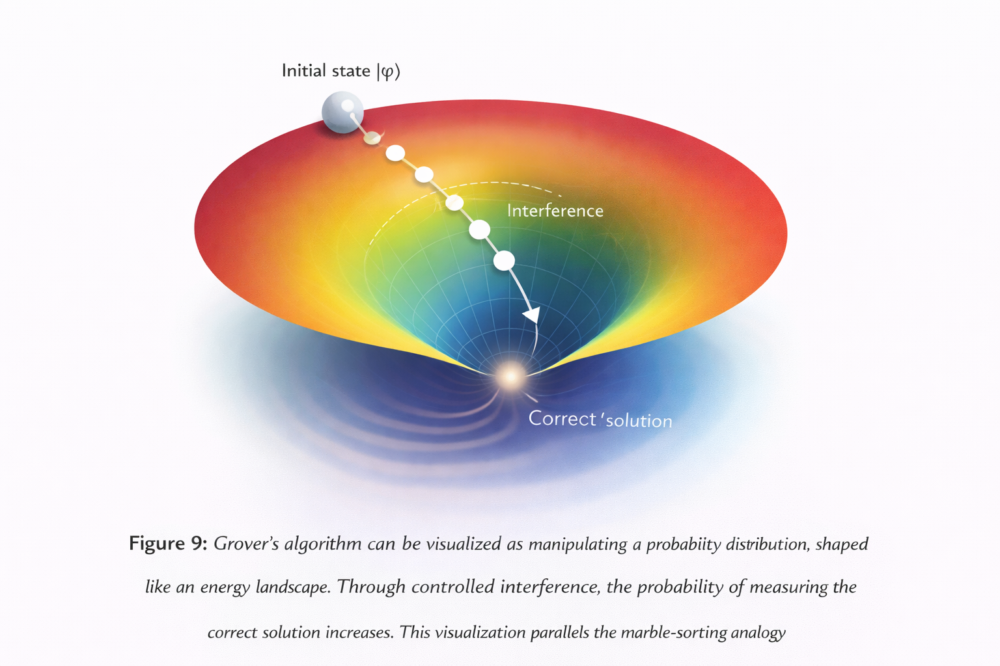

Quantum Search & Amplitude Amplification
Grover's algorithm: from $O(N)$ to $O(\sqrt{N})$ through constructive quantum interference
While quantum computers do not accelerate every computational task, they can provide advantages for certain types of problems. One example is Grover's search algorithm, which enables searching an unsorted database of $N$ elements in approximately $\sqrt{N}$ steps rather than the $N$ steps required classically.
The key mechanism is amplitude amplification. Rather than sequentially checking each candidate solution, Grover's algorithm prepares a quantum superposition of all possible states and iteratively amplifies the probability amplitude of the correct solution through constructive interference. An oracle marks the target state by flipping its phase, followed by a diffusion operation that redistributes amplitudes across the state space.
Classical search: $O(N)$ steps | Quantum search: $O(\sqrt{N})$ steps
For $N = 1{,}000{,}000$: Classical needs ~1M checks, Quantum needs ~1,000
6.1 Quantum Oracles and the Role of Classical Functions
A common misconception is that Grover's algorithm evaluates a classical function across all inputs simultaneously. In reality, a purely classical black box cannot operate on a quantum superposition — interacting with it would collapse the quantum state. Instead, Grover's algorithm requires a quantum implementation of the function, known as an oracle circuit.
The oracle performs a reversible transformation, applying a phase flip to the target state while leaving all others unchanged. Mathematically:
where $f(x) = 1$ for the target state and $0$ for all others. This phase flip is unobservable by itself, but sets up conditions for constructive interference in subsequent iterations.

Classical Black Box vs. Quantum Oracle
A classical function evaluates one input at a time. A quantum oracle acts linearly on a superposition and marks the correct solution by phase inversion.
Why the Oracle Must Be Reversible
All quantum operations must be reversible — no information can be destroyed. A classical function that outputs 0 or 1 is irreversible. To use it within Grover's algorithm, it must be translated into a reversible quantum circuit using phase kickback, where an ancilla qubit enables the oracle to imprint the function's result as a phase on the input register.
The Real Cost of Grover's Algorithm
Grover's algorithm provides a quadratic reduction in oracle evaluations: $O(\sqrt{N})$ vs $O(N)$. However, the actual computational cost is $O(\sqrt{N} \times C)$, where $C$ is the cost of one oracle circuit execution.
| Metric | Complexity |
|---|---|
| Classical search | $O(N)$ oracle evaluations |
| Grover search | $O(\sqrt{N})$ oracle evaluations |
| Actual runtime | $O(\sqrt{N} \times$ cost of oracle circuit$)$ |
Grover's algorithm does not "search all possibilities simultaneously." It manipulates the quantum wavefunction so that interference gradually concentrates probability on the correct answer. The oracle marks — it does not find. The diffusion operator amplifies.
6.2 Geometric Interpretation of Grover's Algorithm
The dynamics of Grover's algorithm can be understood through an elegant geometric interpretation. The entire computation takes place within a two-dimensional subspace spanned by two orthogonal vectors: the target state and the uniform superposition of all non-target states.
Each Grover iteration performs a rotation by a fixed angle of $2\theta$ towards the target state. After approximately $\frac{\pi}{4}\sqrt{N}$ iterations, the state vector aligns with the target, maximizing the measurement probability.

Geometric Interpretation
The quantum state evolves in a 2D space: target $|t\rangle$ vs. non-target superposition $|s\rangle$. Each iteration rotates the state vector by $2\theta$ closer to the solution.

Energy Landscape Visualization
Controlled interference guides the wavefunction toward the solution — just as gravity guides marbles in the physical sorting device. The correct answer sits at the bottom of a probability funnel.
The oracle reflects the state about the non-target subspace (phase flip). The diffusion operator reflects about the mean amplitude. Together, these two reflections produce a rotation toward the target state.